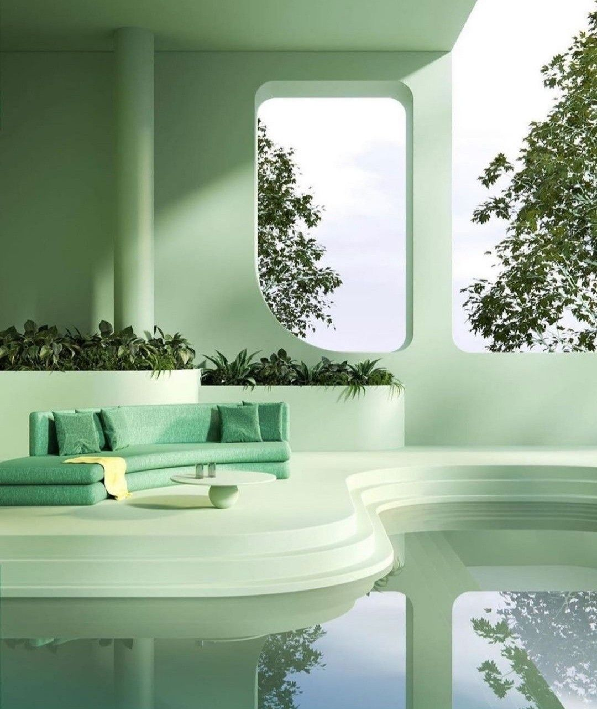

Featured gathering
Autumn Harvest Table
Saturday · District Three · Community Kitchen
The Autumn Harvest Table is one of Elyria's most anticipated seasonal gatherings: an extended public meal set across open spaces in the River Quarter, prepared by the Community Kitchen and sustained through the whole day.
Residents who want to host a Shared Table can request additional provisioning through the system and notify their immediate community through the Information Network. Tables gather between six and twenty people, lasting two to four hours — among the most consistently valued experiences in Elyrian social life.
